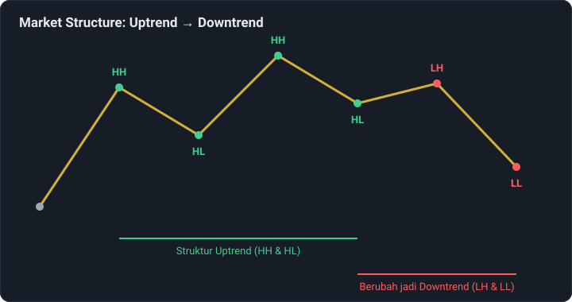
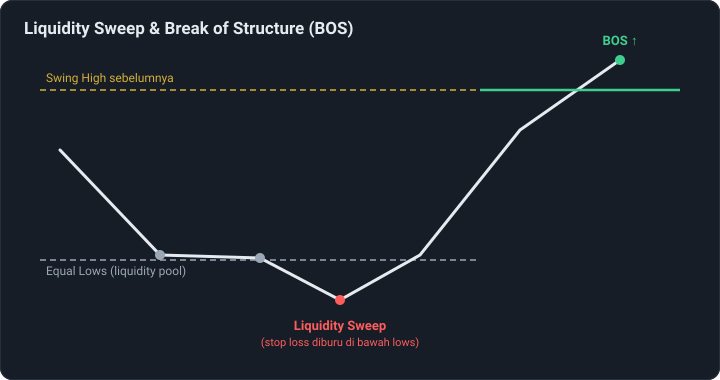
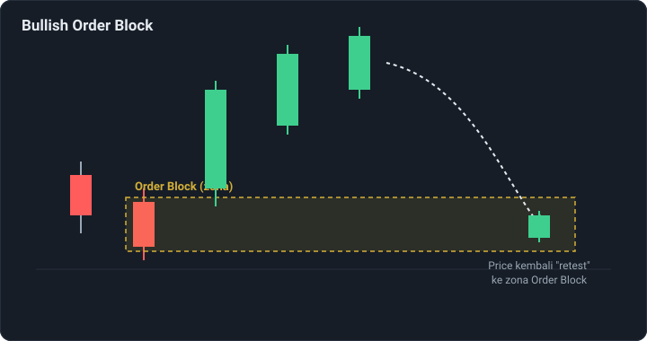
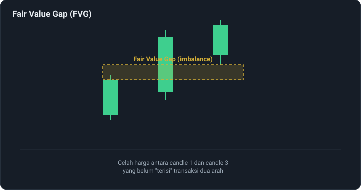

Mengenal Smart Money Concept (SMC) dalam Trading
Smart Money Concept (SMC) adalah pendekatan analisis teknikal yang mencoba membaca pergerakan harga dari sudut pandang pelaku pasar besar — bank, institusi, dan pemain modal besar lainnya yang sering disebut "smart money". Alih-alih hanya mengandalkan indikator, SMC berfokus pada struktur harga itu sendiri: bagaimana harga membentuk tren, di mana likuiditas "bersembunyi", dan area mana yang kemungkinan menjadi acuan institusi untuk masuk pasar.
Market Structure: Fondasi Utama SMC
Sebelum masuk ke konsep lain, memahami struktur pasar adalah langkah pertama. Struktur pasar dibaca dari rangkaian titik tertinggi (high) dan terendah (low) yang terbentuk seiring pergerakan harga.
- Higher High (HH) — puncak baru yang lebih tinggi dari puncak sebelumnya.
- Higher Low (HL) — lembah baru yang lebih tinggi dari lembah sebelumnya.
- Lower High (LH) — puncak baru yang lebih rendah dari puncak sebelumnya.
- Lower Low (LL) — lembah baru yang lebih rendah dari lembah sebelumnya.
Selama harga terus membentuk HH dan HL, struktur dianggap uptrend. Begitu pola berubah menjadi LH dan LL, struktur dianggap berbalik menjadi downtrend.

Break of Structure (BOS) dan Change of Character (CHoCH)
Break of Structure (BOS) terjadi ketika harga menembus swing high atau swing low sebelumnya searah dengan tren yang sedang berlangsung — dianggap sebagai konfirmasi bahwa tren tersebut masih berlanjut.
Change of Character (CHoCH) terjadi ketika harga menembus struktur dengan arah berlawanan dari tren sebelumnya — misalnya saat uptrend gagal membentuk higher high dan justru menembus higher low terakhir ke bawah. CHoCH sering dibaca sebagai sinyal awal potensi perubahan arah tren.
Liquidity: Kenapa Harga Sering "Mengejar" Level Tertentu
Dalam SMC, liquidity merujuk pada kumpulan order (terutama stop loss) yang menumpuk di sekitar level harga tertentu — misalnya di atas swing high atau di bawah swing low yang jelas terlihat di grafik. Level-level ini dianggap menarik bagi pelaku pasar besar karena eksekusi order dalam jumlah besar membutuhkan likuiditas yang cukup.
Fenomena liquidity sweep terjadi ketika harga bergerak menembus level tersebut secara singkat — memicu stop loss yang menumpuk di sana — sebelum berbalik arah. Banyak praktisi SMC menganggap pola ini sebagai indikasi bahwa "smart money" sedang mengumpulkan likuiditas sebelum menggerakkan harga ke arah yang sebenarnya diinginkan.

Order Block: Zona Jejak "Smart Money"
Order block adalah area candlestick tertentu — biasanya candle terakhir yang bergerak berlawanan arah sebelum terjadi pergerakan kuat searah tren — yang dianggap sebagai jejak area di mana pelaku pasar besar membuka posisi dalam jumlah signifikan.
Setelah harga bergerak jauh dari order block, harga sering kembali (retest) ke zona tersebut sebelum melanjutkan pergerakan searah tren. Banyak trader SMC menggunakan zona order block sebagai area potensial untuk mencari entry, dengan asumsi zona tersebut masih relevan sebagai area minat institusi.

Fair Value Gap (FVG)
Fair Value Gap adalah celah harga yang terbentuk ketika pergerakan pasar sangat cepat dan kuat searah tertentu, sehingga meninggalkan "ruang kosong" antara candle-candle yang berdekatan — biasanya terlihat sebagai jarak antara high candle pertama dan low candle ketiga (untuk FVG bullish), atau sebaliknya untuk FVG bearish.
Area FVG dianggap sebagai zona "imbalance" karena minim transaksi dua arah di area tersebut. Banyak trader SMC memperhatikan area ini sebagai potensi zona harga akan kembali mengisi (fill) sebelum melanjutkan pergerakan utamanya.

Cara Konsep-Konsep Ini Biasa Digabungkan
Dalam praktiknya, praktisi SMC jarang menggunakan satu konsep saja secara terpisah. Alur analisis yang umum digunakan biasanya:
- Menentukan bias arah dari struktur pasar (uptrend, downtrend, atau ranging).
- Mengidentifikasi area liquidity yang berpotensi disapu (swing high/low yang jelas, equal highs/lows).
- Menunggu liquidity sweep diikuti tanda perubahan momentum (CHoCH atau BOS berlawanan arah sebelumnya).
- Mencari entry di area order block atau fair value gap yang relevan dengan pergerakan tersebut.
Catatan Penting Sebelum Menggunakan SMC
SMC adalah kerangka membaca pasar, bukan sistem yang menjamin akurasi. Interpretasi struktur, order block, maupun liquidity tetap bersifat subjektif dan bisa berbeda antar trader. Seperti pendekatan analisis lain, SMC sebaiknya dipadukan dengan manajemen risiko yang jelas, bukan dijadikan satu-satunya dasar keputusan tanpa mempertimbangkan stop loss dan ukuran posisi yang wajar.